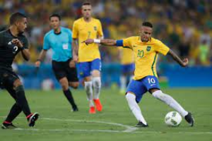

Sport center
Sobre Nossa Loja
Somos a melhor loja de esportes da região, oferecendo produtos de alta qualidade para diversos esportes.
Formas de Pagamento
- Cartão de Crédito
- Pagamento em Dinheiro
- Pagamento em Pix
Produtos em Destaque
Galvão Bueno: 'Nunca vi, em 50 anos, um time tão ruim vestir a camisa da seleção brasileira'
A seleção brasileira perdeu por 2 a 0 para o Uruguai nesta terça-feira (17) , em Montevidéu, e viu uma invencibilidade mais de oito anos cair nas eliminatórias para a Copa do Mundo.
ESPNFilho de Lebron James recebe alta após parada cardíaca
Após sofrer uma parada cardíaca durante um treinamento, na última segunda-feira (24), o jogador de basquete universitário Bronny James, filho do astro dos Los Angeles Lakers, Lebron James, recebeu alt...
Veja
O Brasil pode encerrar um jejum do vôlei feminino hoje (26). O time dispua a final dos Jogos Pan-Americanos de Santiago contra a República Dominicana, às 20h. O ouro não vem para o país desde Guadalajara...
PanAllana Vitoria Nunes